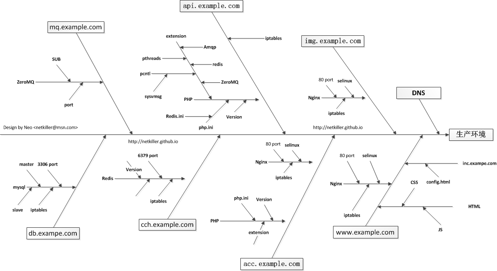

目录
- 22.1. Service Support Set(服务支持系列)
- 22.1.1. Help Desk / Service Desk
- 22.1.2. Problem Management(问题管理)
- 22.1.3. Incident Management(突发事件管理)
- 22.1.4. Configuration Management(配置管理)
- 22.1.5. Change Management(变更管理)
- 22.1.6. 内部培训
- 22.1.7. IT资源管理
- 22.2. Service Delivery Set(服务实施系列)
(1)服务级别管理 (2)可用性管理 (3)能力管理 (4)服务连续性管理 (5)财务管理 (6)事件管理 (7)问题管理 (8)变更管理 (9)配置管理 (10)发布管理
“问题管理” 是以解决问题为导向，以挖掘问题、表达问题、归结问题、处理问题为线索和切入点的一套管理理论和管理方法。也可以说，问题管理就是借助问题进行的管理。
问题管理是事件管理的主要出口，在事件管理中无法根本解决的事件、不断重复的事件、典型或影响范围过大的事件等，通常由事件管理的负责人在问题管理项目中发起问题，交给问题管理处理。问题管理的根本目的是消除或减少同类事件的发生，通过分析所发生的事件或事件的趋势，找出根本原因，然后提出解决办法、解决方案、变通方法、或建议的预防性措施等，来消除或减少事件的再次发生。同时问题管理还可包括主动问题管理和被动问题管理两个部分，问题管理的活动包括问题的发起、确认和分配、问题调查、已知错误确立、提供解决方案、评审、关闭。
“问题管理”是在挖掘问题的基础上，合适地表达问题，正确地解决问题，以此来防范问题演化为危机的一套管理理论和方法。也可以说，问题管理就是借助问题优化管理。
“问题管理”的三要素是挖掘问题、表达问题、解决问题。其中，挖掘问题包括发现问题、分析问题和界定问题，解决问题包括制定解决方案、实施解决方案和跟踪反馈，表达问题不是独立的环节，而是体现和融入到挖掘问题和解决问题的每一个环节之中。
问题管理的特点主要有三方面
一是防患于未然，防止问题演化为危机。问题管理强调“从危机管理到问题管理”，并不是要取代危机管理，而是要以危机管理为主转向以问题管理为主，做到“以防为主，防消结合”；
二是发现和解决关键问题，过滤假问题，解决真问题；
三是跨专业、跨部分地分析和解决问题，打通专业管理或部门之间之间的鸿沟；
鱼骨图，又名因果图，是一种发现问题“根本原因”的分析方法，我们将影响问题的因素与特性，按相互关联性整理而成的层次分明、条理清楚，并标出重要因素的图形就叫特性要因图、特性原因图。因其形状如鱼骨，所以又叫鱼骨图（以下称鱼骨图），它是一种透过现象看本质的分析方法。鱼骨图由日本管理大师石川馨先生所发明，故又名石川图。鱼骨图是一种发现问题“根本原因”的方法，它也可以称之为“Ishikawa”或者“因果图”。其特点是简捷实用，深入直观。它看上去有些像鱼骨，问题或缺陷（即后果）标在“鱼头”外。在鱼骨上长出鱼刺，上面按出现机会多寡列出产生问题的可能原因，有助于说明各个原因之间是如何相互影响的。
在运维工作中，我们经常使用 过程中“故障树分析”，它主要用于出现故障时找到问题的源头。而因果图则是保证7*24运维有哪些影响因素。我认为将“故障树分析”与“因果图”互补使用更能解决运维中遇到的各种问题。
“因果图”能未雨绸缪，“故障树分析”可以亡羊补牢。
问题总是受到一些因素的影响，我们通过头脑风暴法找出这些因素，并将它们与影响因素的特性值，整理，分类，层次化。
![[注意]](/graphics/note.png) | 注意 |
|---|---|
|
我不喜欢开茶话会（中国式会议），参与人员应该每个人在会议前找出问题因素，会议中拿出问题的因素提交给会议主持者，会议目的是将每个人寻找出的影响问题的因素整理成为鱼骨图，而不是在会议上讨论找问题因素。 |
下面我们提供一个鱼骨图分析案例
|  |
上图我们看到保障系统7*24小时运行有哪些因素印象，网站分为几个部分组成
网站
-
www.exampel.com 网站入口，主要是静态内容，或者已经将动态静态化。
-
img.exampel.com 图片服务器
-
acc.example.com, api.example.com 动态服务器
-
cch.exampel.com 缓存服务器， db.example.com 数据库服务器
-
mq.example.com 消息服务器
我通常给每个服务器指定一个主机名，有些事DNS解析的，有些事hosts文件设置例如 cch.example.com, db.example.com 不需要DNS解析。
现在我们分别解释每个节点与问题的影响因素，这里仅仅给出的一个简单的例子，也只能让你对因果图有个入门了解。
除了web服务器，IP地址，80端口，防火墙设置，DNS 解析。他的影响因素包括
PHP版本，PHP扩展，PHP配置文件

很多人顺着简单而直接的“事件 > 反应 > 结果” 连锁行为来反应。
遇有状况发生，第一时间不加思索地反映，造成的结果不但于事无补甚至造成二次故障。
这种不由自主或未经过思考的反映有时会导致灾难性的后果。
更好的选自是：
事件 -> 结果 -> 反应
说白了就是，遇事想清楚在动手不迟。
每个企业都意识到监控工作的重要性，但80%企业的监控工作仍然处在监控的初级阶段。
什么是初级阶段呢？
- 被动监控，故障发生运维人员永远不是第一个发现故障的人
- 监控IP地址与TCP端口，很多时候HTTP 80端口正常接受请求，但WEB服务器不能正常工作。
- 人肉监控（人肉运维），采用人海战术，桌面摆放很多显示器，甚至投影仪，要求监控者盯着各种仪表板界面，制定各种工作流程以及KPI考核监控人员。
- 人肉测试，要求监控人员每间隔几分钟人工操作一次，以确认系统正常工作，例如（没15分钟登陆一次，下一笔顶单，做一次支付等等）。
- 万能的重启，定其重启所有的服务器。
什么是中级阶段呢？
- 报警：手机短信更靠谱，因为手机随身携带（邮件不算，邮件到达速度慢，各种因素不稳定）
- 监控服务：探测服务的可用性，而不是仅仅监控端口，注意我是指私有协议的监控（HTTP，SMTP,FTP,MySQL 不算在内）
- 故障分析：通过日志与调试工具分析软件BUG，指导开发人员改善软件质量，使其故障不会再次发生，达到不用restart重启方式解决故障
- 半自动化测试
什么是高级阶段呢？
- 我认为高级阶段是监控与灾备系统打通融合一体。
- 除此之外监控与开发密切相关，在开发阶段需要为监控数据采集做铺垫，每开发一个新功能就要想到未来这个功能是否需要监控，怎样监控。
- 数据前期采集与数据挖掘非常重要，监控不仅能做软件与硬件的性能分析，还能提供决策支持，这里又涉及了BI。
- 除了监控，另一个息息相关的是自动故障转移，有兴趣可以看看我的其他文章 http://netkiller.github.io/journal/
监控从初级向中继再到高级，是转被动到主动，从人工到自动化。
监控不应该局限在硬件与服务，还应该延伸到业务领域。
你在百度上搜索监控多半是一些开源或商业软件的安装配置指南。这些文章中会告诉你怎样监控CPU、内存、硬盘空间以及网络IP地址与端口号码。
开源软件无非是 Nagios, Cacti, Mrtg, Zibbix ..... 这些软件在我的电子出书《Netkiller Monitoring 手札》中都有详细说明安装与配置方法。
商业软件也有很多如 SolarWinds， Whit's Up，PRTG ......
所有的服务器，网络设备，监控你都做了，那么按照我上面的监控分级，你处于监控的那个阶段？
监控都有哪些手段跟方式呢？
中心卫星站为中心站点向外放射，通常是通过IP地址访问远程主机，实施监控，常用方法是SNMP,SSH,以及各种Agent(代理)，方式是请求然后接收返回结果，通过结果判断主机状态。
Monitor Server
|
-------------------------------
| | |
[Web] [Mail] [Database]
以监控服务器为中心，星型散射连接其他监控节点，没有什么优点，缺点是Web跟Mail节点的通信没有监控
一级一级的向下探测，寻找故障点，需要在各个节点埋探针。
Monitor Server
|
-------------------------------
| | |
V V V
| | |
[Web] ---> [Cache] ---> [Database]
\ ^
`------------------------|
首先监控服务器跟星型拓扑一样监控，再让Web节点去访问Cache节点然后返回监控结果，以此类推，让Cache节点访问Database, 让Web访问Database节点。
将所有业务逻辑都逐一模拟一次，任何一个环节出现问题，立即发出警告。
这里主要监控服务是否可用，可以检查软件的工作情况，涉及测试环节。
通过自动化测试工具辅助监控，例如模拟鼠标点击，键盘输入，可以监控图形界面程序与网页程序。
Windows 监控可以通过 Windows Automation API实现，通过程序控制，能够模拟人工操作软件，实现操作匹配返回结果实现自动化监控
Web页面监控的方案就太多了，比较经典的是Webdriver衍生出的各种工具Selenium - Web Browser Automation最为出名。我通过这个工具模拟用户操作，例如用户注册，登陆，发帖，下单等等，然后匹配返回结果实现自动化监控与报警
通过数据分析，将故障消灭在故障发生前。举一个例子，开发人员忘记设置redis 时间，虽然程序一直完好工作，但redis内存不断增长，总一天会出现故障。
我们通过采集redis状态信息，分析一段时间内数据变化发现了这个问题。
总结一下5年前的工作，在不写下来自己都快忘光了，工作关系现在已经不涉及运维这块的工作。
首先制定服务器拓扑图，拓扑图应该有两套，一套是物理拓扑图，另一套是基于业务的虚拟拓扑图。
物理拓扑图包含机柜，机位，例如防火墙，核心交换机，机柜交换机，服务器，存储等等他们之间的物理关系。如果是云主机也许标注出来。
接下来分配IP地址以及服务端口号
最后制定虚拟拓扑图，是各种服务间的关系图，由IP地址和端口组成，标住出他们之间的关系。
什么东西放在什么地方，怎么规划空间等等。
根据不同用途使用不同的RAID，这主要跟IO密集都与数据安全性有关。
Virtual Disk 技术很有用，我使用这种技术两RAID划分为两个设备，一个用来安装操作系统，另一个用于数据存储，方便系统重做。
SSD 机械故障为零，整体故障率低于传统硬盘。我通常做RAID0用与负载均衡场景。
我通常使用btrfs，LVM/EXT4已经过时。
/ 分区EXT4 安装操作系统，swap 分区不一定是内存2倍，因为现在的服务器都是8~16GB，OS很少能使用到交换分区，但是像Oracle这样强制交换分区为内存两倍。
其余所有空间分区格式化为btrfs mount 到 /srv 目录，在通过子卷(subvolume)分配给各个应用。
![[提示]](/graphics/tip.png) | 提示 |
|---|---|
| 子卷(subvolume) 有个特点是不能rm -rf 删除子卷的，也起到一定的安全性。 |
以Tomcat为例
Tomcat 的虚拟机功能基本没用，因为需要升级需要频繁启动，会影响其他业务，所以采用每个项目一个实例的方式。
/srv/apache-tomcat/ 是Tomcat目录 /srv/apache-tomcat/www.netkiller.cn 每个实例一个目录 /srv/apache-tomcat/other.netkiller.cn
以PHP为例
/srv/php-7.0.0 ln -s /srv/php-7.0.0 /srv/php
通过 /srv/php 符号链接可以任意切换PHP版本
代码目录与服务器目录分开
/www/netkiller.cn/www.netkiller.cn /www/netkiller.cn/other.netkiller.cn
按照物理图谱图，对应机位安装设备，链接网线，整理机柜。
注意强弱电分离，以免强电磁场干扰弱电。以Dell系列服务器为例，电源通常在右边，网口在中间左边，这样电源走机会右侧理线架，网线走左侧理线架。
我通常每个机柜放两台千兆交换机，一台放在机柜最顶端，通过10GB万兆以太网链接至核心交换机，走核心业务数据；另一台放在机柜最底端，负责其他次要业务，例如远程控制口，数据库备份等等。
上电，接通电源，开机。观察机柜的电压/电流变化。
通过脚本或者自动化运维工具按照并配置。
安装各种服务器软件如 nginx, apache-httpd, apache-tomcat ......
软件运行环境，例如Java，PHP, Node.js, Ruby, Python ......
安装数据库，配置复制策略，备份计划
应用程序部署完毕后不要急着测试，可能很多IP地址以及端口不通，这时候测试只能是频繁报BUG。
我们先让将监控系统建立起来，监控所有服务器IP地址与端口，以及各种应用服务监控。
硬件监控: 温度监控，风扇监控，RAID卡监控，内存监控，PCI设备监控...
操作监控：负载，CPU，内存，用户登陆监控，磁盘空间监控，网络流量监控，TCP/IP状态监控，进程数量，线程监控，僵尸进程，进程退出...
服务器监控：连接数，线程数，进程数，内存开销，节点状态...
日志监控：如果监控到日志中出现某些关键次，发出警报。
服务监控：HTTP，SMTP，POP，AJAX/JSON，XML